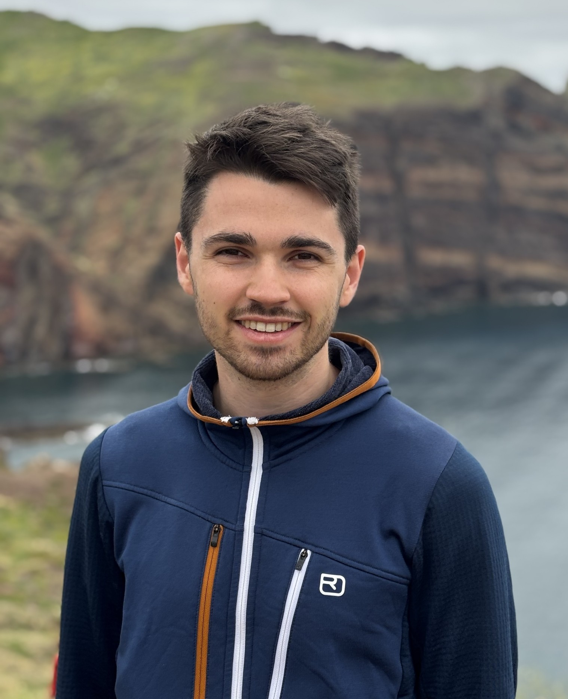
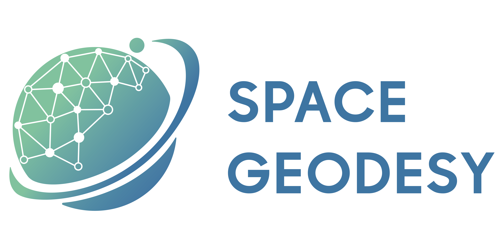
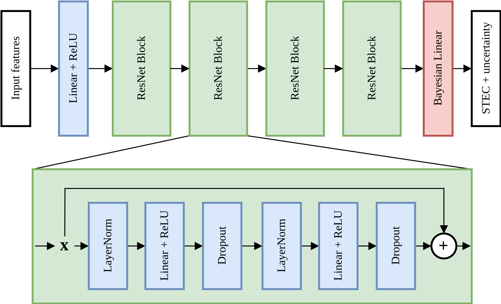
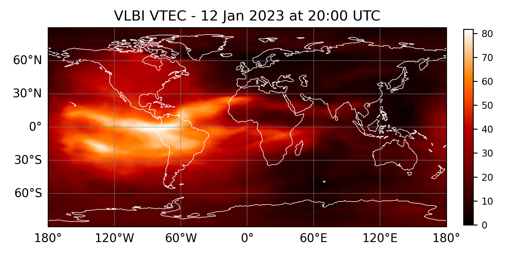
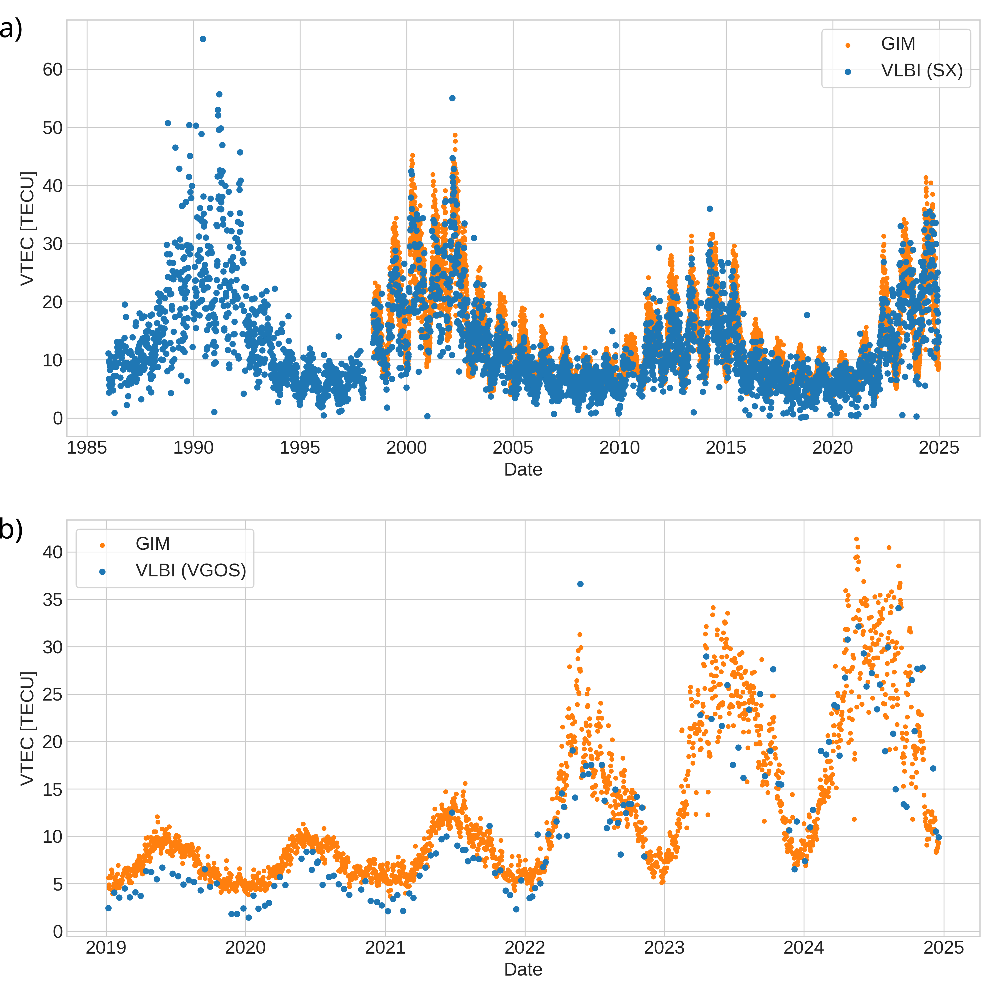
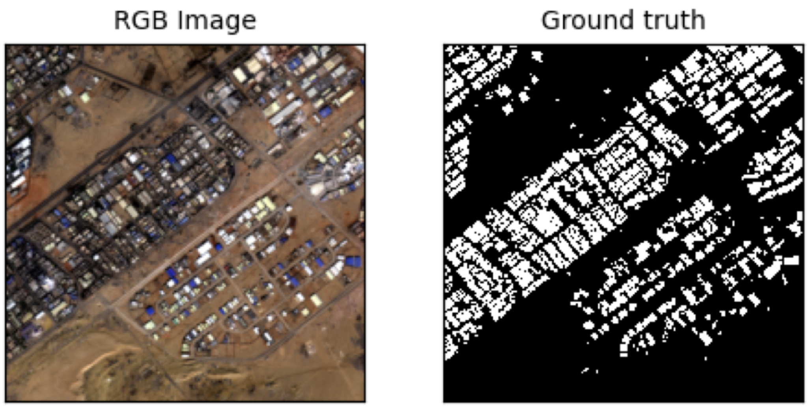
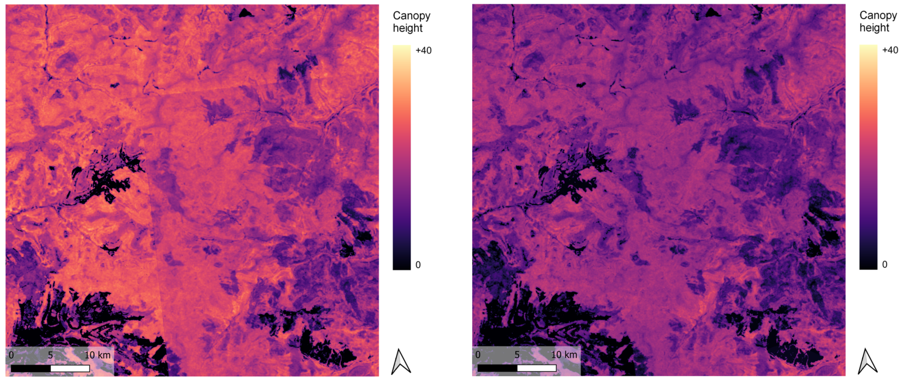
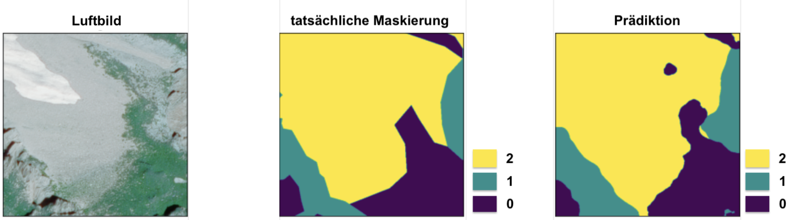

Arno Rüegg
PhD Researcher at ETH Zürich Institute of Geodesy and Photogrammetry · Space Geodesy & Machine Learning


PhD Researcher at ETH Zürich Institute of Geodesy and Photogrammetry · Space Geodesy & Machine Learning

I am a PhD researcher in geomatics at ETH Zürich, specializing in machine learning for geospatial data modeling. My research focuses on ionospheric mapping and data fusion using GNSS and VLBI observations, with an emphasis on large-scale deep learning and HPC-based workflows.
I have strong experience with PyTorch, parameter estimation, and large-scale data processing. During my Master's, I worked on computer vision and multi-sensor data fusion for remote sensing applications.

Development of a data-driven model for slant total electron content (STEC) estimation directly from GNSS observations, bypassing single-layer assumptions and mapping functions. The approach leverages deep learning to model spatiotemporal ionospheric variability and provides uncertainty estimates alongside the STEC. Models are pre-trained on historical data and fine-tuned daily to achieve improved accuracy compared to standard GIM-based corrections.
Links: Preprint Code (GitHub)

Machine learning–based data fusion framework combining dense GNSS-derived VTEC with sparse but complementary VLBI observations. Two fusion strategies are investigated: direct assimilation of station-based VLBI VTEC and end-to-end integration of VLBI differential TEC (DTEC). A weighted loss balances heterogeneous data volumes, with evaluation against independent Jason-3 altimetry measurements over a full year.
Links: Springer Poster (PDF) Code (GitHub)

Comparative analysis of vertical total electron content (VTEC) estimates derived from colocated S/X VLBI and VGOS observations during simultaneous sessions. Results show good agreement with GNSS-based Global Ionosphere Maps (GIM) and indicate improved stability for VGOS under increased solar activity, highlighting its potential for more robust ionospheric monitoring during disturbed conditions.

Joint deep learning framework for building segmentation using SAR (Sentinel-1) and optical (Sentinel-2) imagery. The work explores domain consistency through adversarial learning and input augmentation, enabling improved single-domain inference while leveraging multi-sensor information during training.
Links: Thesis (PDF)

Evaluation and bias correction of a global canopy height map using ICESat-2 laser altimetry data across multiple test regions. Systematic over- and underestimation effects were analyzed and mitigated using tile-wise mean corrections and spatial smoothing.
Links: Report (PDF)

Deep learning–based classification of solid rock and loose material in aerial imagery for permafrost-related mapping applications. Implemented with a U-Net architecture and transfer learning, evaluated via cross-validation and data augmentation.
Links: Thesis (PDF)